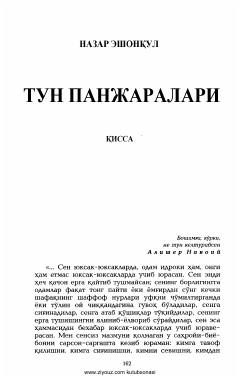

TPInsonning o'zligini anglash va hayot mazmunini izlashga bag'ishlangan falsafiy qissa.
Ushbu qissa insonning ichki dunyosi, hayot mazmuni va o'z o'rnini topishga bo'lgan intilishlari haqida hikoya qiladi. Asar qahramoni tunning sirli va falsafiy muhitida o'z o'tmishi, bolaligi va hayotiy savollari bilan yuzma-yuz keladi.